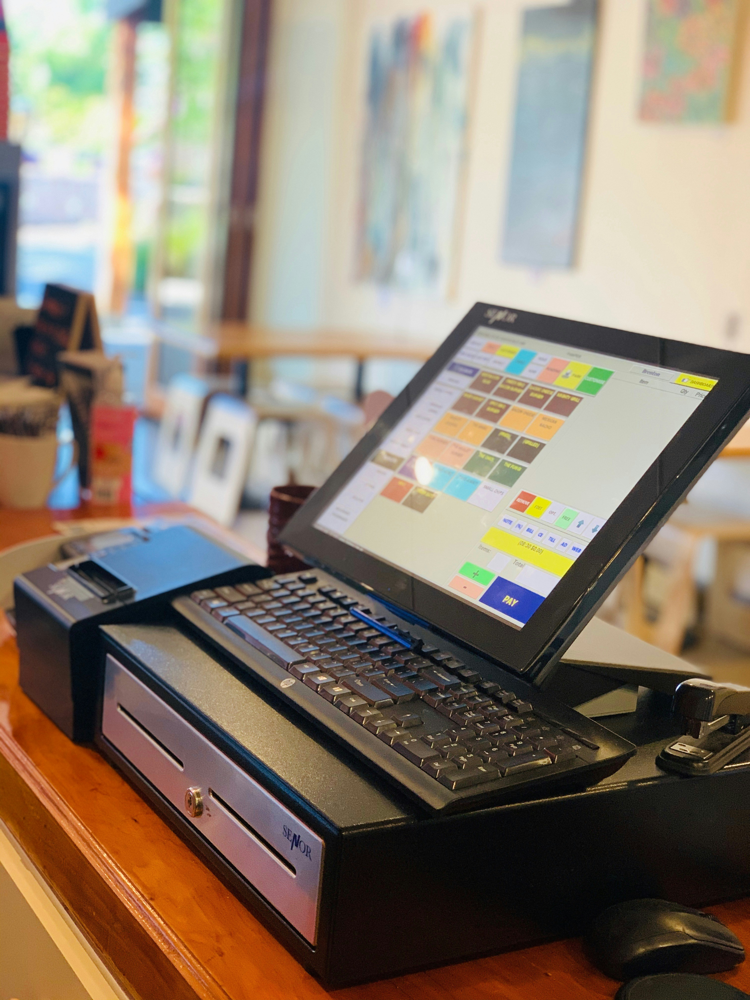

Portafolio
*Nota: El código fuente de estos proyectos es privado. Se expone la arquitectura y el impacto técnico.*
SIIB-Mobil

Kotlin • APIs Bluetooth • ASP.NET MVC • SQL Server
MDM Lite
Kotlin • Modo Kiosco • C# • Endpoints HTTP
Plataforma Agroindustrial
C# • ASP.NET MVC • T-SQL • Integración COM
Sistemas Desktop (Marca Blanca)

C# • Windows Forms • MySQL • Arquitectura Modular